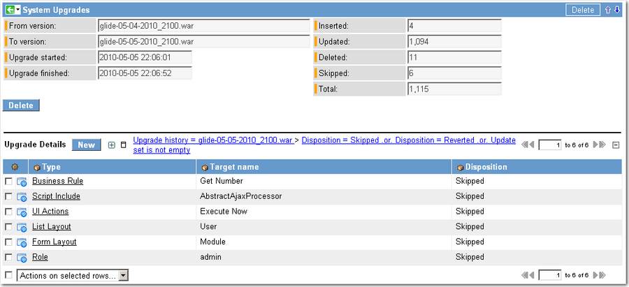
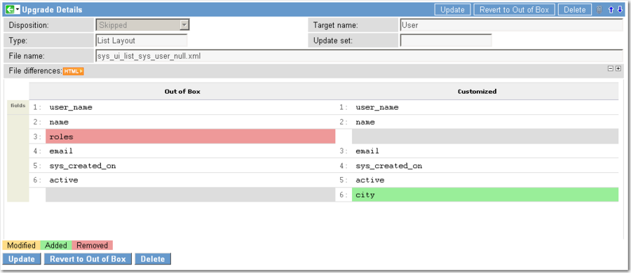

Upgrade History
Contents
1 Overview
The upgrade history module tracks every upgrade made to an instance. Every record that is examined during an upgrade is tracked, and the action taken on each record (such as whether the record is updated) is tracked as the disposition. Administrators can use the upgrade history module to locate and resolve upgrade conflicts and to revert customizations to out-of-box versions.
2 Upgrade History
An upgrade history record is created for each upgrade that is run. To view an upgrade history record, navigate to System Diagnostics > Upgrade History.
This record provides the following fields:
| Field | Input Value |
| From | Name of the previous .war file. |
| To | Name of the applied .war file. |
| Upgrade started | Time stamp for the start of the upgrade. |
| Upgrade finished | Time stamp for the end of the upgrade. |
| Inserted | Count of the records inserted. |
| Updated | Count of the records updated. |
| Deleted | Count of the records deleted. |
| Skipped | Count of the upgrade records skipped because of customer customizations. |
| Total | Total count of all the records affected by the upgrade. |
| Upgrade Details | Related list that tracks every record affected by the upgrade. Open one of these records to compare the out-of-box and customized versions. The upgrade process automatically skips changes to customized objects. |
|  |
{kind=link}
3 Upgrade Details
A record is created for every file in an upgrade. Open one of these records to see what has changed and decide whether to revert your customizations. The upgrade details form displays a side-by-side comparison of the customization and the corresponding out-of-box version. Modifications, additions, and deletions are marked by a color code.
The detail record provides the following fields:
| Field | Input Value |
| Disposition | Action performed on this file during an upgrade. |
| Type | Current file type (such as Business Rule or UI Policy). |
| Target name | Name of the record corresponding to the current file. |
| File name | Current upgrade file name. |
| File differences | Comparison of the file in the upgrade with the customized version. |
|  |
{kind=link}
3.1 Disposition
The Disposition field tracks the action taken on each record, such as whether the record is updated. The upgrade process automatically skips (disposition of Skipped) customized objects. To apply a skipped update, see Reverting Customizations.
The following dispositions are possible:
| Field | Input Value |
|---|---|
| Inserted | A record was inserted. |
| Updated | A record was updated. |
| Deleted | A record was deleted. |
| Skipped | An upgrade component was not applied because the customer had customized the component. |
| Reverted | A customized component was overwritten by a baseline component. |
| Unchanged | A baseline component has not changed since the last release (available starting with the Eureka release) |
3.2 File Names
Administrators can use the file name to identify what components have been updated or skipped. Update records follow one of the following naming format conventions.
| Formatting convention | Types that typically use format | Examples |
|---|---|---|
| [table name]_[record Sys ID] |
|
|
| [table name]_[associated table name]_[record name] |
|
|
4 Reverting Customizations
When an object is customized, a corresponding record is added in the Customer Updates [sys_update_xml] table. This table maintains the current version information for all objects that have been customized.
To prevent customizations from being overwritten by system upgrades, the upgrade process automatically skips changes to objects that have a current version in the Customer Updates table. Starting with the Calgary release, the upgrade process does not skip these objects if only excluded fields have changed.
You may want to overwrite your customizations when a software upgrade contains a feature that you would like to implement. To revert a customized object to a system default version after an upgrade:
- Navigate to System Diagnostics > Upgrade History.
- Select the desired software version.
- Filter the Upgrade Details related list by Disposition is Skipped.
- [Optional] Add another filter condition for Changed is True This filter condition returns only the objects that have changed since the last upgrade.
- Select the update record to implement.
- A side-by-side comparison of the customization and the default version is displayed in the File differences field. Deletions are highlighted in red, additions in green, and modifications in yellow.
- Click Revert to Out-of-box to overwrite your customized object with the system default version.
- The Disposition changes from Skipped to Reverted.
- After you revert a customization, Reapply Changes becomes available. Click this button to reapply your customizations (undo the revert).
| |
Note: Reverting a customization is not tracked in update sets. You must perform this procedure on each instance for which you want to revert your customizations. |
5 Enhancements
5.1 Eureka
- Provides the unchanged disposition for baseline components that have not changed since the last release.
5.2 Calgary
- The upgrade process does not skip objects that have a current version in the Customer Updates table when only excluded fields have changed.